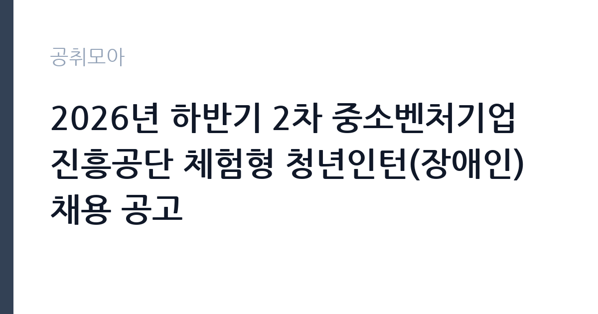

[공공기관] 2026년 하반기 2차 중소벤처기업진흥공단 체험형 청년인턴(장애인) 채용 공고
중소벤처기업진흥공단 · 서울 · 마감 2026-10-12 (D-21) · 출처 잡알리오

한눈에 보는 모집 조건
| 기관 | 중소벤처기업진흥공단 |
|---|---|
| 공고명 | 2026년 하반기 2차 중소벤처기업진흥공단 체험형 청년인턴(장애인) 채용 공고 |
| 고용형태 | 청년인턴(체험형) |
| 근무지 | 서울 |
| 게시일 | 2026-09-22 |
| 마감일 | 2026-10-12 (D-21) |
지원자격, 이렇게 읽으세요
- 공공기관 채용공시
- 세부 조건은 원문 공고문 확인
지원자격은 세 가지 함정을 확인해야 한다. 첫째, 장애인 등록이 필수이며 증빙이 필요하다. 둘째, 연령 상한이 만 34세이므로 생년월일 기준일을 공고문에서 확인해야 한다. 제대군인은 복무 기간만큼 상한이 연장된다. 셋째, 교육훈련 시작 시점의 고용보험 미가입 조건이다. 현재 아르바이트 등으로 고용보험에 가입되어 있다면 입사 전 상실 처리가 필요한지, 시점이 언제인지를 공고문에서 확정해야 한다.
이 공고의 포인트
중소벤처기업진흥공단은 중소·벤처기업에 정책자금과 수출·인력 지원을 하는 중소벤처기업부 산하 기관이다. 체험형 인턴은 기관의 사업운영을 보조하며 공공기관 실무를 경험하는 과정으로, 이후 공단 채용이나 다른 공공기관 지원 때 직무 이해도를 어필할 수 있다. 장애인 전형으로 별도 모집하므로 일반 전형보다 경쟁 구도가 다르다는 점도 기회 요인이다.
전형은 어떻게 진행되나
전형은 서류전형과 면접전형으로 진행되는 것이 일반적이다. 서류에서는 지원동기와 인턴 직무 이해도, 기본 인성을 보고, 면접에서는 조직 적응력과 의사소통을 평가한다. 체험형은 필기시험 부담이 없는 경우가 많아 준비 기간이 짧아도 도전할 수 있다. 세부 전형 단계와 배점, 우대 사항은 원문 공고문에서 확인해야 한다.
원문에서 확인한 전형 방식
- 「장애인고용촉진 및 직업재활법」에 의한 장애인 - 임용예정일 기준 만 15세 이상 만 34세 이하인 자 * 제대군인에 대해서는 관련 법에 의거 응시연령 상한 연장 - 학력, 전공, 성별 등 제한 없음 - 임용 즉시 근무가 가능한 자(교육훈련 시작 시점 고용보험 미가입자) ※ 상세내용 첨부 공고문 참조
이런 분께 추천해요
- 공공기관 취업을 준비하며 실무 경험과 가점을 쌓으려는 만 34세 이하 청년 장애인
- 중소기업 지원 정책과 현장 지원 업무에 관심 있는 사람
- 학력·전공 제한 없는 곳에서 소통 역량으로 승부하려는 사람
지원 전 체크리스트
- 장애인 등록 증빙 서류가 유효한지 확인한다
- 연령 기준일 현재 만 34세 이하에 해당하는지, 제대군인 연장을 적용받는지 본다
- 교육훈련 시작 시점의 고용보험 상태를 확인하고 필요시 정리 계획을 세운다
- 임용 즉시 근무가 가능한 상태인지, 거주지와 출근 가능 여부를 점검한다
모집 일정과 제출 타이밍
접수는 2026년 10월 12일에 마감된다. 이후 서류와 면접을 거쳐 하반기 중에 임용되는 흐름이 일반적이다. 체험형 인턴의 근무 기간은 통상 수개월 단위이며, 교육훈련 시작일이 곧 근무 시작일이 된다. 정확한 전형 일정과 인턴십 기간, 근무지는 원문 공고문에서 확인해야 한다.
직무 이해하기: 공공기관
체험형 인턴의 업무는 사업운영 지원이 중심이다. 고객 응대와 전화 응대, 서류 작성 보조, 자료 정리와 데이터 입력, 회의 준비 같은 실무를 맡는다. 중소벤처기업진흥공단의 정책자금 상담 창구나 지역 본·지사에서 현장 업무를 보조할 수 있다. 단순 보조로 보이지만, 공공기관의 문서 체계와 민원 응대 방식을 몸으로 익히는 것이 이후 취업에서 자산이 된다.
자기소개서 작성 팁
자기소개서는 지원동기와 포부를 구체적으로 써야 한다. 중소벤처기업과 관련된 본인의 경험(가족 사업, 아르바이트, 전공 수업 등)을 끌어와 왜 중진공인지 설명하는 구성이 좋다. 장애인 전형이라고 장애를 부각하기보다, 고객 응대나 사무 보조에서 발휘할 본인의 강점을 앞세우는 것이 설득력이 있다. 오탈자 없는 깔끔한 문서는 기본이다.
면접 준비 포인트
면접에서는 인성과 직무 이해를 본다. 지원동기와 인턴 기간의 목표, 민원인 응대 상황 질문이 단골이다. 공공기관 인턴 면접은 거창한 답변보다 성실함과 배움의 자세를 확인하는 자리이므로, 솔직하고 차분하게 답하는 것이 좋다. 기관의 주요 사업(정책자금, 수출 지원 등)을 하나 정도 알고 가면 질문에 답할 거리가 생긴다.
급여·근무조건 읽는 법
확정된 보수액은 원문 공고문의 보수 항목에서 확인해야 한다. 참고로 2026년 상반기 중진공 체험형 청년인턴의 급여는 세전 월 162만 원 수준이라는 지원자 후기가 전해진다. 체험형 인턴 급여는 최저임금과 기관 예산에 따라 정해지며, 4대보험 가입과 식비·교통비 지원 여부는 공고마다 다르므로 원문에서 확인하기 바란다. 경쟁률과 합격선은 공개되지 않으므로 원문에서 확인해야 한다.
자주 묻는 질문
- 체험형 인턴 후 정규직 전환이 되나요?
체험형은 직무 체험이 목적이며 정규직 전환과 직접 연결되지 않는 것이 일반적이다. 다만 공공기관 근무 경력은 이후 채용에서 우대·가점으로 이어질 수 있다. 세부 조건은 원문에서 확인해야 한다. - 고용보험 조건이 정확히 무엇인가요?
교육훈련 시작 시점에 고용보험 미가입자여야 한다는 조건이다. 현재 가입 중이라면 상실 시점과 기준일을 공고문에서 확인하고 미리 정리해야 한다. - 근무지는 어디인가요?
중진공 본사와 지역 본·지사로 배치되는 구조가 일반적이다. 이번 모집의 근무지와 배치 기준은 원문 공고문에서 확인해야 한다.
함께 보면 좋은 공고
[공공기관] 한국토지주택공사 개방형 직위(감사실장, 준법감시관) 공모 — 마감 2026-10-07[공공기관] 한국도로공사 비상임이사 공모 — 마감 2026-09-29[공공기관] 한국환경공단 화학안전지원단 생활환경안전처 주거환경관리부 기간제근로자(촉탁라급) 채용 — 마감 2026-10-06출처: 잡알리오 공개정보를 바탕으로 공취모아가 정리한 안내글입니다. 모집 조건·일정은 변경될 수 있으니 지원 전 반드시 원문 공고문을 확인하세요. 본 글은 정보 제공용이며 합격을 보장하지 않습니다.